Designing for a hierarchy, one sprint at a time.
A Portuguese regional government needed one employee portal for its whole public administration, on a very short deadline. I led the team and owned the product, from the first sprint to delivery: I built the way we worked, untangled four levels of hierarchy and handed every module to development as it was designed.
Designed by the mid designer on my API decisions, and approved by the client in the first round.
Because leading is letting others fly.
The employee’s workspace: pending items, processes, notifications, news, widgets, quick links and the team’s absences.
Not the live product, but almost. Every screen here was redesigned following the real product strictly: same layout, content and flows. Only the visual style (colours, type and icons), names and data were changed, so the client’s product is not exposed.
Ten modules, four levels, very little time.
Every employee of the regional administration needed one place for internal news, documents, colleagues, services and tools. The hard part wasn’t the screens. It was the hierarchy behind them.
Government, departments, entities and sub-entities each publish, approve and manage their own people, and each answers to the level above. Who can publish what, who approves it and who gets to see it changed with every level. Understanding that structure, how each level answers to the one above, and turning it into profiles the platform could use was the biggest challenge of the project. It shaped every module.
In public procurement the scope can’t grow or shrink. Every session with the client was about understanding each requirement well, not negotiating it.
One or two modules per sprint, a fixed weekly rhythm, a clear Definition of Done and a client approval at the end of every sprint.
The Services Portal design system already covered most components, so wireframes would only slow us down.
User management, permissions and notifications followed the Services Portal patterns instead of being reinvented.
Invites recreated from the originals I sent the team. Team names changed for privacy.
“Keep it fun, keep it fast, keep it clear. Every module is a small win.”
The team’s kick-off guideDesign and development ran as two tracks. Every Sprint Review doubled as a handover: developers received the module’s documentation and started their own sprint planning on the next working day, while the design team moved on to the next module.
Led the team and the design decisions, ran the rituals, wrote the requirements and user stories, made the product calls and bridged with development.
“Requirements Master”Built the hi-fi screens on the existing design system and, sprint after sprint, made more of the design calls herself.
“Screen Builder”Hired for this project. Worked between the interface and requirements gathering, alongside me, to grow on both sides.
“Hybrid Explorer”Growing the team, not just the product
We held three critique sessions. Both designers shared how they felt about the framework and the method, critiqued each other’s work and, above all, my role as lead. I wanted them to follow the whole process and grow with it.
The mid designer took real ownership: by the later sprints many decisions no longer needed me, built on lessons from earlier sprints, which freed me to consolidate the documentation. She designed the whole employee workspace on top of the API decisions I had made, presented it to the client and got it approved in the first round. After the project, with my feedback to management, she was promoted.
The junior designer, an intern hired for this project, met real product work in a demanding sprint rhythm and finished with sharper critical thinking and a solid start to her career. The feedback I got in those sessions was about holding both sides at once: leading the work and still being one of the team.
Product Owner responsibilities
Saying no, with a roadmap
I made the product decisions facing both the client and development. The scope was fixed by the tender, but what went into the first version wasn’t. I learned to say no, keep the scope tight and put the platform working as a whole first, then agree with the client what each following version would bring.
Employees first, then the APIs
The dashboard and other modules depended on data from many other government entities. I met each one to find out whether an API already existed or had to be created. Only about one in five existed.
We didn’t design around the APIs we found. We started from what employees needed to see and do, and then defined how each API had to be built or consolidated so the data matched that need.
One source, two audiences, with AI in the loop
In the public sector, design work is paid against evidence: formal Word reports that the client signs off before each invoice. Every sprint I fed a detailed report for the client, and every week I released it to development.
To avoid writing everything twice, I built AI into the framework: from the client report, it turned each module into user stories and documentation in Jira for the developers. One source of truth served both audiences, the client got the final report when design closed, and development never waited for a ticket.
* Planned for two weeks. The client couldn’t make the alignment session in week two, so we moved it to week three instead of handing over something unvalidated.
Around the sprints: 8 requirement sessions and 8 co-creation sessions with the client, about 110 kick-offs and wrap-ups, a final presentation and a formal handover. In development, 2 demos and 7 environment releases.
The turning point came with the institutional directory. When the client sent us the real posts, reporting lines and heads of every unit, we saw the hierarchy for what it was, and our job became translating the government’s real structure into a structure of platform profiles.
Most answers came back to that hierarchy. There were six core profiles, and they were cumulative: a manager at department level was also a manager of every entity and sub-entity below it, and the government admin was an admin at every level. Assigned per organisational unit, that added up to around fifteen combinations, and every journey had to work for each of them.
| Core profile | Content | Directory | Back office | Search | Documents | Notifications | Dashboards |
|---|---|---|---|---|---|---|---|
| Employee | |||||||
| Manager | |||||||
| Communication | |||||||
| Admin | |||||||
| Government admin | |||||||
| Auditor |
Author · a communication profile at entity level
Approvers · one administrator per level
Every employee in scope

The approval ladder, rules and exceptions
None of these flows came from the tender: we designed every one of them with the client. There was an approval ladder to respect, and cumulative profiles meant some steps could be skipped: when the author already held a profile higher up, the steps they covered didn’t apply. Defining every rule, and above all every exception, was the biggest puzzle we solved with the client.
All of it went into the documentation for development, because it shaped the permission architecture behind every profile.
Straight to high fidelity, with a reason for each.
With the design system in place, every sprint produced production-ready screens. The Figma file grew to ten front-office and six back-office boards.


What follows is a selection. It gives a picture of each area, but many screens and journey steps stay out.
One page, every level
Guidelines, FAQs, wikis, legislation, events and trainings share one template, with tabs for government, departments, entities and sub-entities.
WhyEmployees answer to more than one level at once. One page per content type, split by level, beats a separate area for each part of the hierarchy.

Trainings people actually open
Courses from the HR platform with dates, format and seats, and a detail page with a direct way to enrol.
WhyTrainings are where employees act, not just read, so each card carries what they need to decide: dates, format and how to enrol.
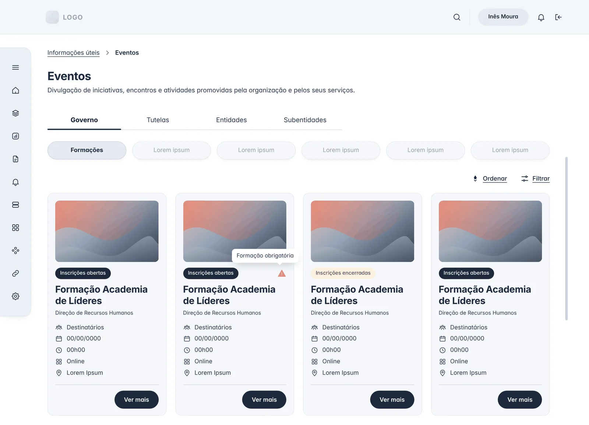

A dashboard each person builds
The dashboard starts empty and each employee adds widgets from a catalogue.
WhyWith so many profiles, any fixed dashboard would be wrong for most people. Letting them choose was simpler and fairer.


Documents stay where they live
Employees browse the documents they have access to, and open them in the document management system.
WhyCopying documents into the portal would create a second source of truth. Within a fixed scope, linking was the honest answer.
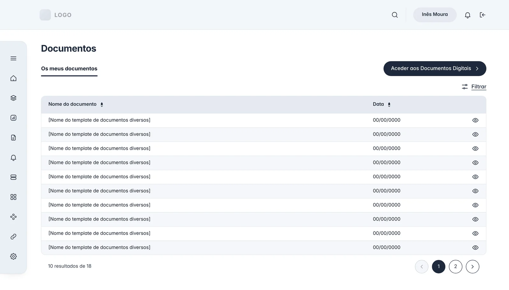
Profiles by level, in one place
Admins add a profile and a level together; every combination a person holds is listed in their record.
WhyCumulative profiles are hard to picture. Showing every combination made the hierarchy visible to the people managing it.


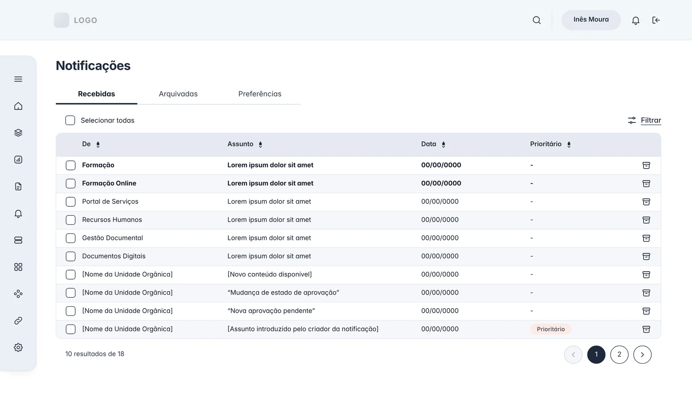

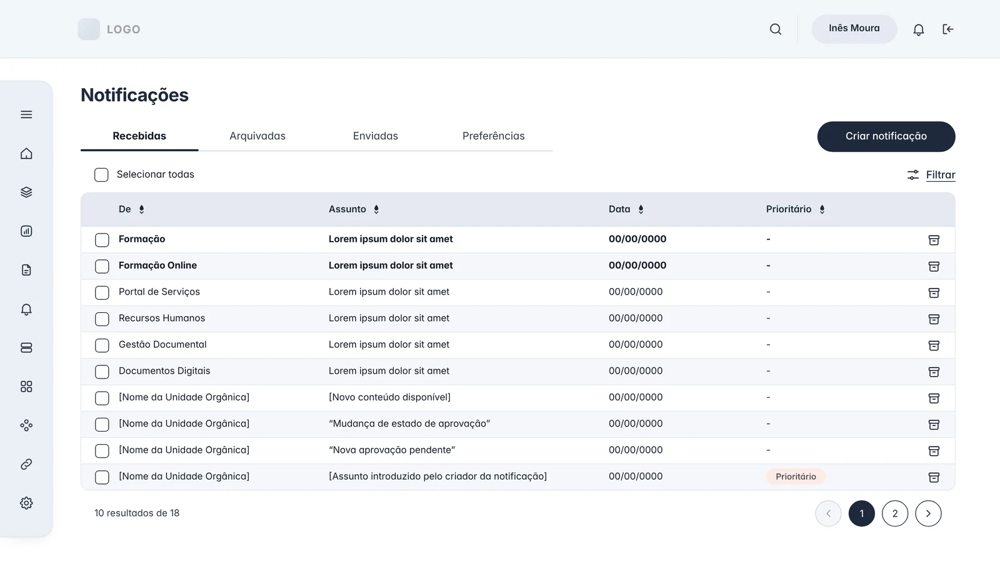
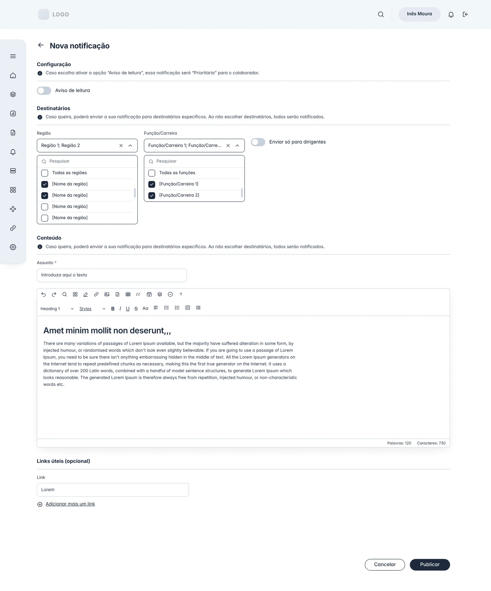


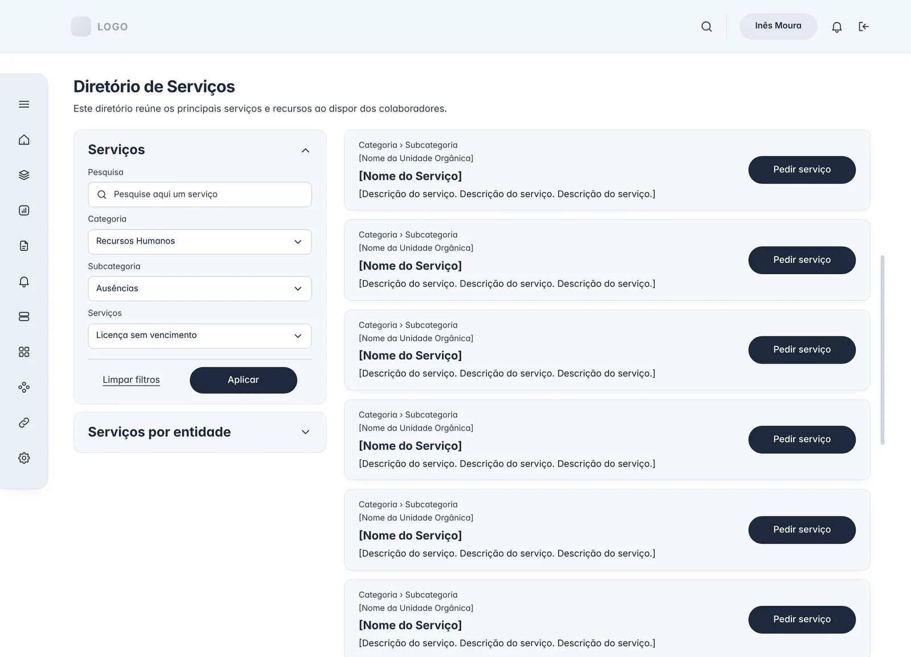
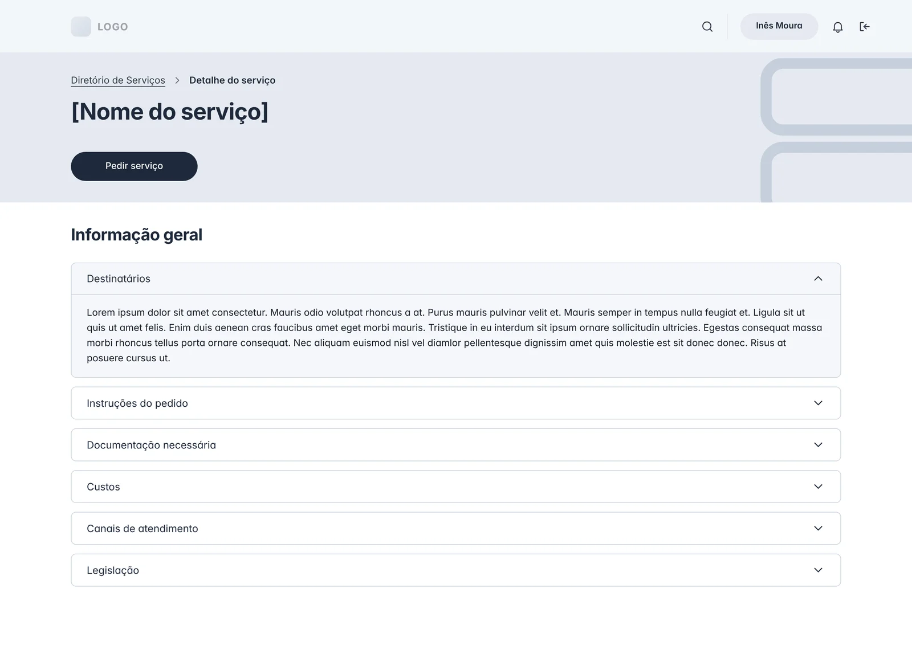
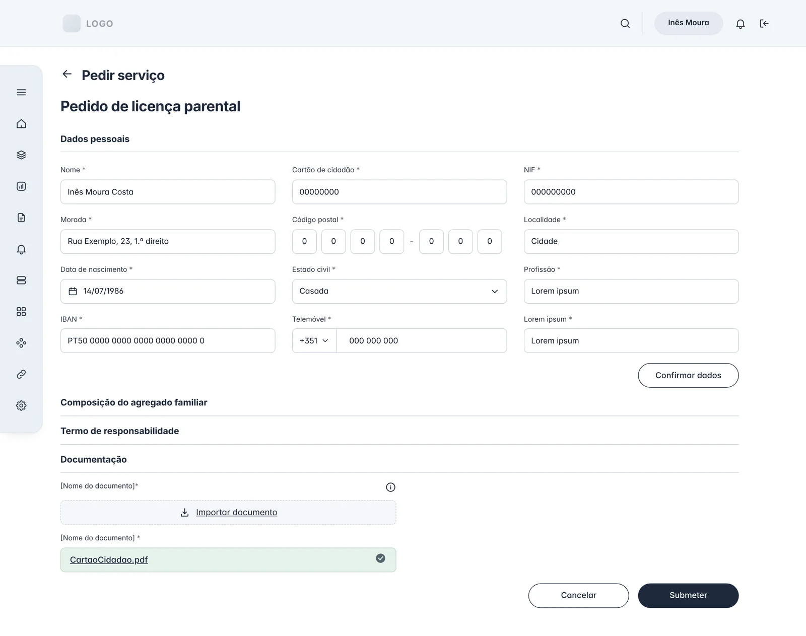


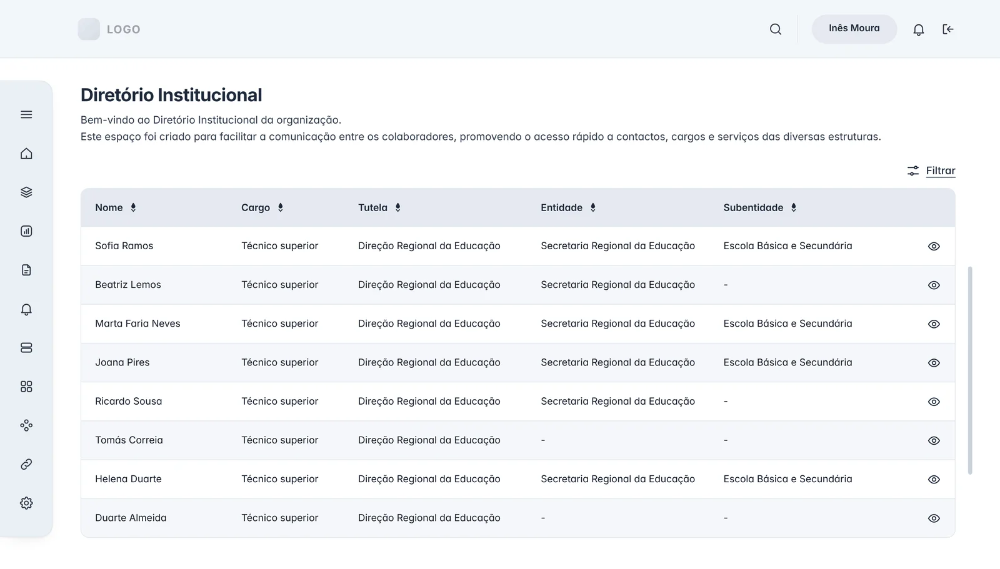


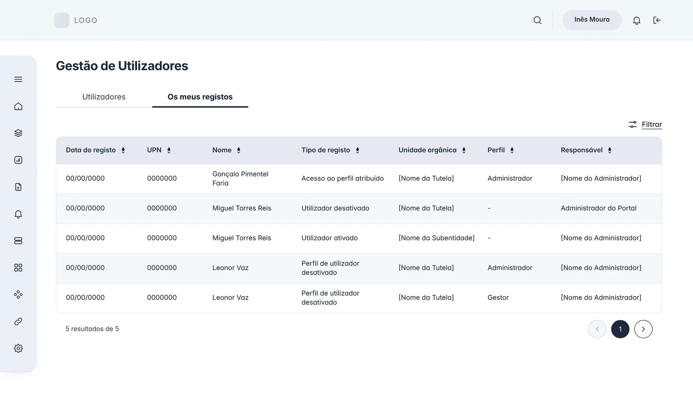


The same people, one front door.
The employee portal lives next to the citizen-facing Services Portal I also led. Same users, same design system and the same patterns for users, permissions and notifications. An employee who works as an operator on the Services Portal starts the day here and jumps straight to their requests; HR and the rest of the digital ecosystem are one click away.
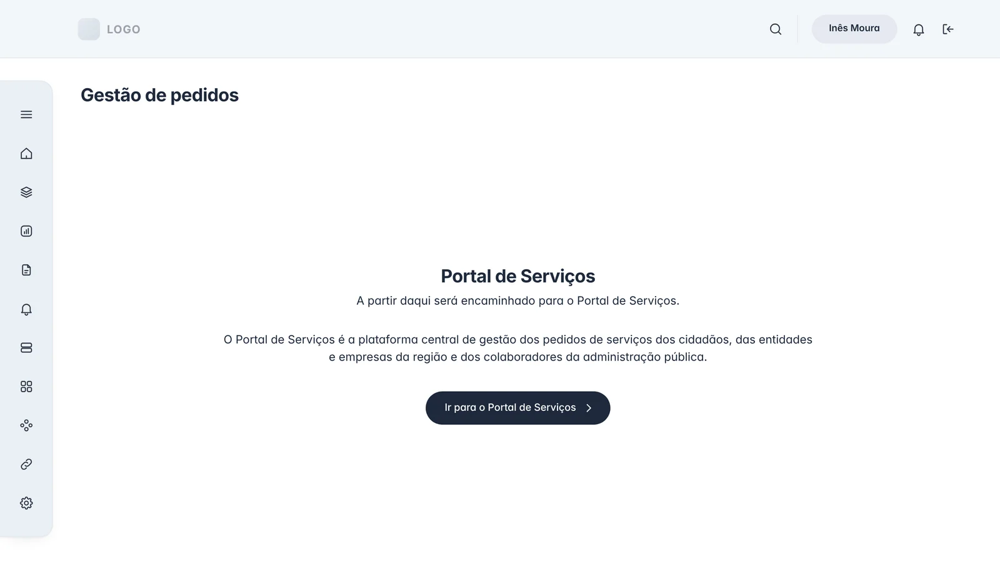
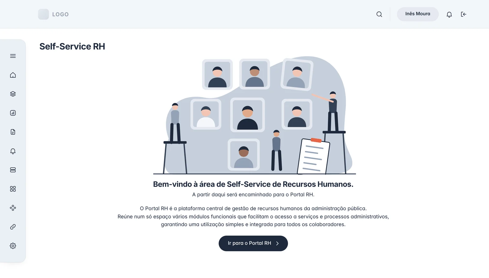
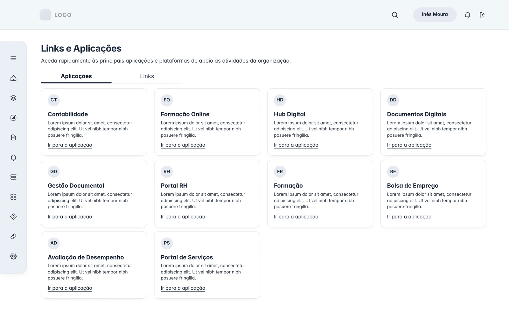
Approved sprint by sprint, built in under three months.
One of my first decisions, agreed with development on day one: design and development would both run in sprints, and the client would approve every sprint, screen by screen.
In public procurement deadlines are fixed. If we had designed the whole product and shown it at the end, a few rejections would have left development with no room to react. With an approval at the end of every sprint, each decision was closed and archived as we went, the client watched the product take shape, and nobody could reopen sprint two in the last week.
That is what made the project work. All ten modules were designed, documented and handed over sprint by sprint, and development finished in under three months, with me alongside the team until the build was done. As far as I know, the client demos that followed went through without changes to journeys, profiles, screens, integrations or APIs. The portal is complete and now waits for the client to schedule its go-live.
What I’d take to the next project.
Constraints design the process
The best decision in this project wasn’t a screen. It was looking at the constraints first and designing the way we worked around them.
Approve as you go, protect the deadline
A client sign-off at the end of every sprint closed each decision as we went. Nothing could be reopened in the last week, so development never lost its room to react.
Leading means letting go of decisions
The more the team owned, the further we went. The mid designer ended up making calls without me, presented her own work to the client and was promoted.
Documentation is a product too
One source, two audiences: the client’s report and the developers’ Jira stories came from the same work, with AI in the loop, so nobody waited and nothing was written twice.